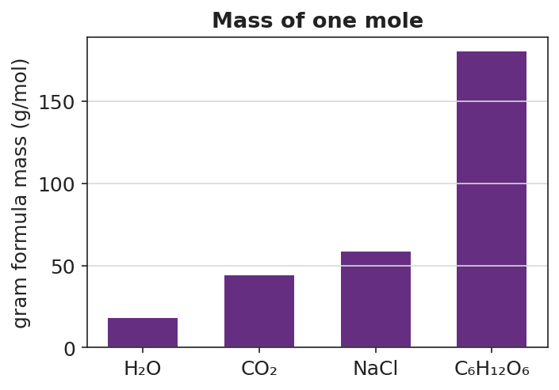

01 Phenomenon
Three containers are on the demonstration table. Each one holds exactly one mole — 6.02 × 10²³ formula units — of a different substance: water, table salt, and sugar. The water weighs 18 grams. The salt weighs 58.5 grams. The sugar weighs 180 grams. Same count. Very different masses on the balance.
02 Driving question
Why do equal numbers of atoms (or formula units) of different substances have such different masses?
03 Notice & wonder
| I notice… | I wonder… |
|---|---|
Turn & Talk #1: Look at the bar chart your teacher is projecting. CO₂ and H₂O each have 3 atoms per molecule — but their bars are very different heights (44 vs. 18 g/mol). In one sentence, why might two molecules with the same number of atoms have such different masses?
04 Initial model
Before your teacher names the process: use the Periodic Table to find the atomic mass of each element in H₂O and add them up. H appears twice (subscript 2), O appears once.
Your add-up table:
| Element | Atomic mass (g/mol) | Subscript | Mass contribution (atomic mass × subscript) |
|---|---|---|---|
| H | 2 | ||
| O | 1 | ||
| Total GFM |
What is the total mass you calculated for one mole of H₂O? _______________ g/mol
Does your answer match the bar chart for H₂O? _______________
What two pieces of information from the Periodic Table and formula did you need? _______________________________________________
05 Investigate
Part 1 — ABCs: Predict before you calculate
Before calculating anything, rank the four substances on the bar chart by predicted gram formula mass (smallest to largest). Use only what you know about the formulas — which elements sound heavier? Which formulas have more atoms?
My prediction (1 = smallest mass, 4 = largest mass):
| Substance | Formula | My predicted rank |
|---|---|---|
| Water | H₂O | |
| Carbon dioxide | CO₂ | |
| Table salt | NaCl | |
| Table sugar | C₆H₁₂O₆ |
After you complete Part 2, return and check: was your prediction correct? What surprised you?
After checking: _______________________________________________
Part 2 — GFM calculations
Calculate the gram formula mass of each compound. Use the Periodic Table. Show every row.
Compound A: H₂O (confirm your Initial Model here)
| Element | Atomic mass (g/mol) | Subscript | Mass contribution |
|---|---|---|---|
| H | 2 | ||
| O | 1 | ||
| GFM | ___ g/mol |
Compound B: CaCl₂
| Element | Atomic mass (g/mol) | Subscript | Mass contribution |
|---|---|---|---|
| Ca | 1 | ||
| Cl | 2 | ||
| GFM | ___ g/mol |
Compound C: C₆H₁₂O₆
| Element | Atomic mass (g/mol) | Subscript | Mass contribution |
|---|---|---|---|
| C | 6 | ||
| H | 12 | ||
| O | 6 | ||
| GFM | ___ g/mol |
Now check your GFM for C₆H₁₂O₆ against the bar chart. Does it match? _______________
Part 3 — Reading the bar chart
Look at figures/molar_masses.png:

Which substance has the largest gram formula mass? _______________
Which two substances have the most similar gram formula masses? _______________
CO₂ has a higher bar than H₂O. Both molecules have three atoms. Use what you found in Part 2 to explain why CO₂ has a higher gram formula mass than H₂O.
06 Make it make sense
For each compound below, calculate the gram formula mass. Show your complete add-up table. These are the same compounds you practiced in the Investigation — confirm your work here.
1. H₂O
| Element | Atomic mass (g/mol) | Subscript | Mass contribution |
|---|---|---|---|
| H | 2 | ||
| O | 1 | ||
| GFM | ___ g/mol |
2. CaCl₂
| Element | Atomic mass (g/mol) | Subscript | Mass contribution |
|---|---|---|---|
| Ca | 1 | ||
| Cl | 2 | ||
| GFM | ___ g/mol |
3. C₆H₁₂O₆
| Element | Atomic mass (g/mol) | Subscript | Mass contribution |
|---|---|---|---|
| C | 6 | ||
| H | 12 | ||
| O | 6 | ||
| GFM | ___ g/mol |
07 Key vocabulary
- gram formula mass
- the mass in grams of one mole of a substance, found by summing (atomic mass × subscript) for every element in its chemical formula; the unit is g/mol; also called molar mass
- molar mass
- another name for gram formula mass; the mass per mole of a substance (g/mol); obtained by reading atomic masses from the Periodic Table and summing them according to the formula's subscripts
- mole
- the chemist's counting unit: 6.02 × 10²³ particles (atoms, molecules, or formula units); the mole bridges the atomic scale (particles too small to count directly) to the laboratory scale (grams readable on a balance); the gram formula mass gives the mass of exactly one mole
Use each term in a sentence about today’s investigation. Do not copy the definition — describe something you actually did or observed.
gram formula mass: _______________________________________________ _______________________________________________
molar mass: _______________________________________________ _______________________________________________
mole: _______________________________________________ _______________________________________________
08 Revise your model
Return to your Initial Model (H₂O add-up table). Add vocabulary labels:
Draw a box around the step where you multiplied atomic mass × subscript. Label it “contribution of each element.”
Circle the final total. Label it with the correct unit: _______________
Write a revised appositive sentence for the result you calculated:
The gram formula mass of water — ___ g/mol — is found by _______________________________________________
Then finish this Because / But / So sentence:
A mole of gold has far more mass than a mole of carbon because __________________________________________, but __________________________________________, so __________________________________________.
09 Exit ticket
(a) Calculate the gram formula mass of SO₂. Show the atomic mass × subscript add-up.
| Element | Atomic mass (g/mol) | Subscript | Mass contribution |
|---|---|---|---|
| S | |||
| O | |||
| GFM | ___ g/mol |
(b) Calculate the gram formula mass of NaOH. Show the atomic mass × subscript add-up.
| Element | Atomic mass (g/mol) | Subscript | Mass contribution |
|---|---|---|---|
| Na | |||
| O | |||
| H | |||
| GFM | ___ g/mol |
(c) In one sentence, explain why a mole of gold (Au) has more mass than a mole of carbon (C), even though both contain the same number of atoms.
10 Explore further
- "Mass of One Mole" demonstration: Pre-weigh one mole each of water (18 g), table salt (58.5 g), and sugar (180 g) into labeled containers. Students hold or observe each container in turn, recording their mass. Discussion: same number of particles, wildly different mass — what accounts for the difference? Connect to the bar chart in `figures/molar_masses.png`.
- Gram-formula-mass calculation practice: Using the Periodic Table from the 2025 Reference Tables, students sum atomic masses × subscripts to compute the GFM of a series of compounds (H₂O, CaCl₂, C₆H₁₂O₆, CO₂, NaOH). Each student shows the add-up in a structured table: element | atomic mass | subscript | product | sum. This is the core skill for the NYSSLS molar mass standard.
- Bar-chart reading: Students read and interpret `figures/molar_masses.png` to answer: which substance has the largest GFM? Why does CO₂ have a larger GFM than H₂O even though both molecules contain only two elements?